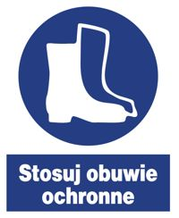
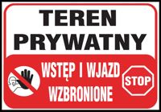
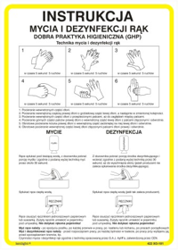
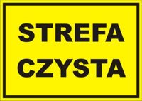
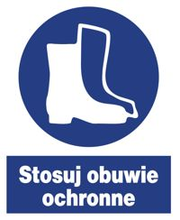
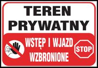
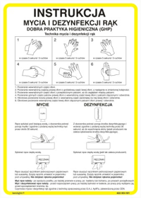
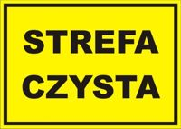

Robert Gurgul
Doradztwo żywieniowe i zootechniczne ferm drobiu
Doradztwo żywieniowe i zootechniczne ferm drobiu
 Checklista KAT dla norm z 02.2021Lumina 37dyplom_400x297_verkap_plus_wolica_kozia4adyplom_400x297_verkap_plus_wolica_kozia4bBreeding GuideLumina 37 | Lumina 38 Sterowniki Handlowe dla drobiuLM.50 InstrukcjaLM.60i Manual13335 Aviagen Broiler Text Single pagesArteria
Checklista KAT dla norm z 02.2021Lumina 37dyplom_400x297_verkap_plus_wolica_kozia4adyplom_400x297_verkap_plus_wolica_kozia4bBreeding GuideLumina 37 | Lumina 38 Sterowniki Handlowe dla drobiuLM.50 InstrukcjaLM.60i Manual13335 Aviagen Broiler Text Single pagesArteria 






